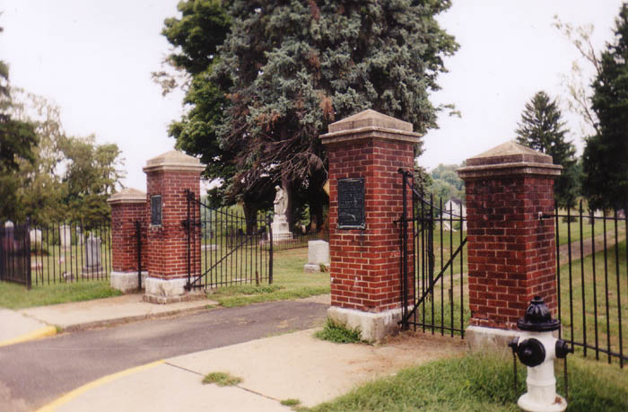
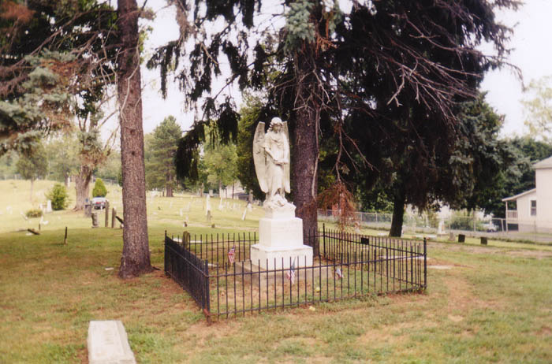
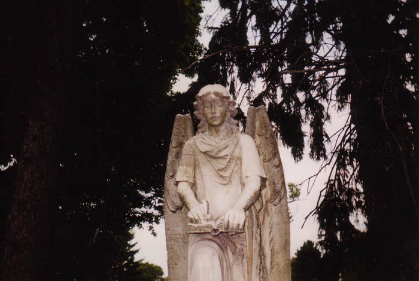
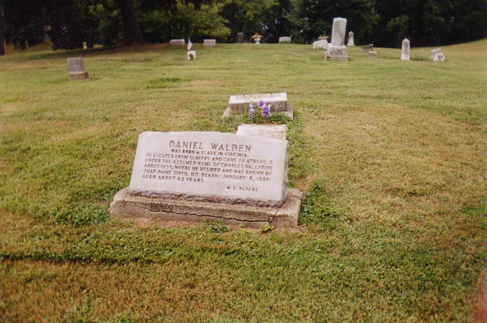
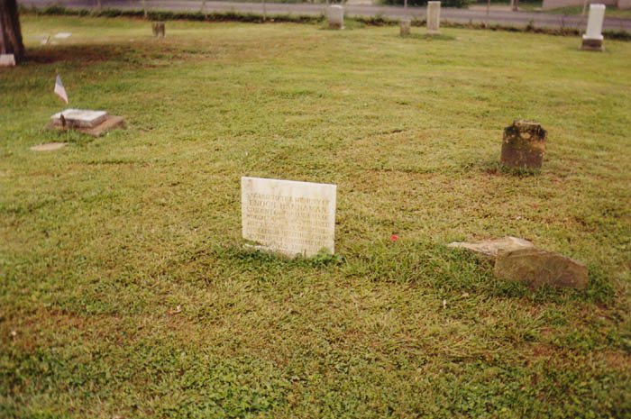
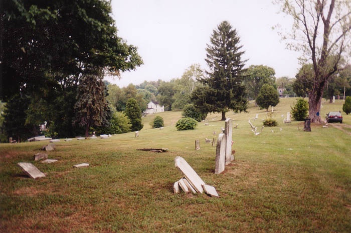

One of Athens' many ghost stories belongs to the cemetery on West State Street. This graveyard covers several hundred feet and contains stones dating all the way back to the early 1800s. Near the front gate there is a stone angel statue which commemorates the many unknown soldiers buried here. Legend has it that the statue sometimes moves and, more frequently, sheds tears.

The statue looks very sad, with its eyes downcast and its shoulders slumped. It's easy to see how a legend like this could get started, especially since the angel stands so close to the front and can be see just by driving by. As for real tears, I can't say; I visited in the daytime, in September 2002, and wasn't lucky enough to see anything happen.

Although the angel is the focal point of the ghost stories, people do say that the cemetery as a whole is haunted. It's littered with broken and unidentifiable stones, but of the ones that can be read some have interesting life stories printed on them.

Above is one example. It tells the story of Daniel Walden, who escaped from slavery in 1855 and lived free in Athens for many years under an assumed name.

This one you probably can't read from the photograph. It says: SACRED TO THE MEMORY OF ENOCH HANNAMAN. STUDENT OF THE O. U. LATE OF WOOD COUNTY, VA., WHO DIED JULY 3, 1827, AGE 21 Y. 5 MOS. 2 DAYS. HIS ELDEST BROTHER FROM SENTIMENT OF BROTHERLY DUTY CONSECRATES THIS STONE IN HIS MEMORIAL. I wonder how he died, way back in 1827.

It's definitely an interesting and creepy cemetery; I'd expect no less from Athens. From what I hear it's open all night, so if you want to check it out sometime I don't think it would be very difficult.
Ohio University Hauntings
Back
Sources
Everett, Lawrence. Ghosts, Spirits, and Legends of Southeastern Ohio. Haverford, PA: Infinity Publishing, 2002. pp. 14-18.